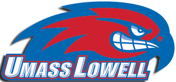
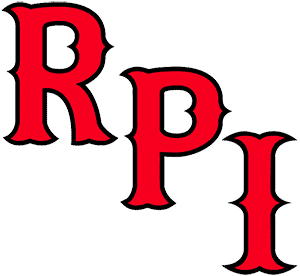

Hockey East
New Hampshire
New Hampshire is 3-1-1 and 12th in the NPI. Across 500 simulated seasons its median NPI finish is 35th, with a 95% range of 9th to 57th. ELO expects about 5 wins in the next 10.
Next 10 games
- Sat, Oct 24vs Michigan State35%
- Fri, Oct 30at Vermont48%
- Sat, Oct 31at Vermont48%
- Fri, Nov 6

at UMass Lowell50% - Sat, Nov 7vs UMass Lowell64%
- Fri, Nov 13

vs RPI58% - Sat, Nov 14
 vs Union44%
vs Union44% - Thu, Nov 19at Connecticut33%
- Sat, Nov 21vs Connecticut47%
- Sat, Nov 28vs Brown53%
Win chances from ELO; the dot is stronger the more lopsided the game.
Projected NPI finish
500 simulated seasons, remaining games decided by ELO win chances. Dashed line: median. Shaded: 95% range.